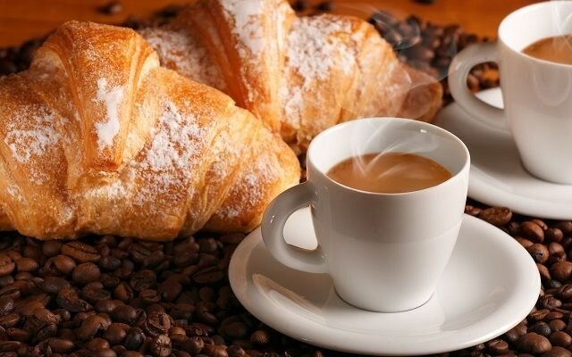
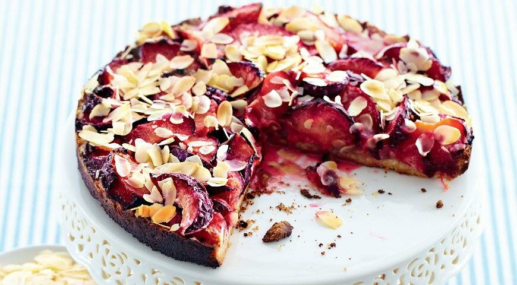
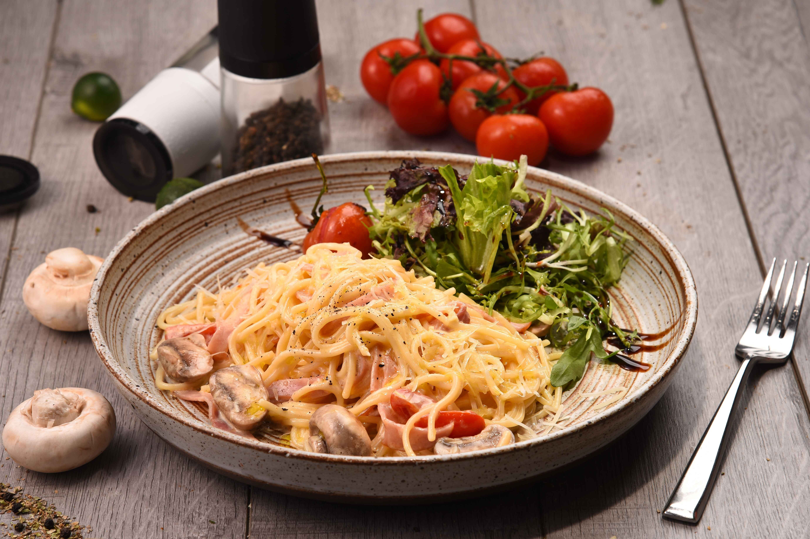
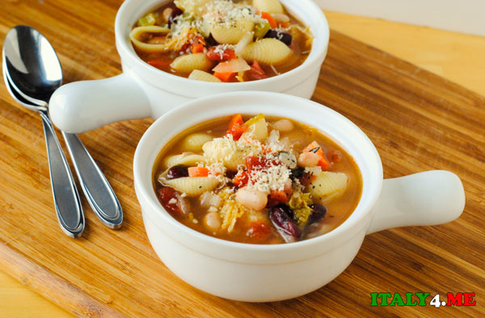

Voluptas
Ресторан итальянской кухни
Итальянцы – большие гурманы и в еде признают только самое лучшее. Италия – это более двух тысяч наименований вин, пятьсот с лишним сортов сыра, триста видов мясных изделий, несколько сотен разновидност ей пасты... Однако не только продукт ами высшего качества знаменита эта страна. Большинство итальянцев – от личные кулинары. Созданная ими итальянская кухня – уникальная, многранная, бесконечная, неповторимая; говорить о ней можно бесконечно..
Наше меню:
Мука пшеничная — 250 г
Масло сливочное — 170 г
Вода — 65 г
Молоко — 65 г
Дрожжи — 5 г
Сахар — 35 г
Соль — 5 г
Завтрак
1.Cornetto
– идеальное дополнение к чашечке хорошего кофе. Правда, в Риме эту выпечку называют обычно Cornetto. Вкус традиционных итальянских корнетто немного отличается от французских круассанов. Они содержат меньше масла, но более сладкие и часто пекутся с апельсиновой цедрой. Начинки у корнетто бывают самые разные – это может быть джем, крем, шоколад. Также бывают корнетто с марципаном и миндалем.

Пшеничная мука – 300 г;
Сахар – 120 г;
Сливочное масло – 150 г;
Куриное яйцо – 1 шт.;
Соль — 5 г
Джем
2.Crostata
– Итальянский завтрак должен быть вкусным. А что может быть вкуснее торта? Поэтому торт Crostata частенько присутствует на утреннем столе. Это чудесное лакомство из песочного теста подарит хорошее настроение на весь день. В Италии кростату готовят с абрикосами, вишней, дикими ягодами и другими начинками, поэтому можно выбрать торт с самым любимым вкусом.

Спагетти - 400 г
Грудинка варено-копчёная
Яйцо куриное - 1 шт.
Сыр пармезан - 75 г
Масло сливочное - 2 ст.л.
Чеснок - 2 зубчика
Соль — 5 г
Обед и Ужин
1.Паста
– Pasta alla carbonara – традиционное блюдо столицы Италии, а именно региона Лацио. Когда-то это блюдо было очень популярным среди итальянских шахтеров. Но со временем, Паста Карбонара стала популярной в других регионах страны и за ее пределами. Самую вкусную Pasta alla carbonara сегодня готовят повара Рима.

Тесто для пиццы - 300 г
Соус томатный
сыр Моцарелла 180 г
Помидоры
Базилик
2.Пицца Маргарита
– Пицца «Маргарита» - это традиционное итальянское блюде, известное во всем мире. Ее состав максимально простой, но вкус никого не оставляет равнодушным. Самая популярная история пиццы «Маргарита» говорит, что рецепт появился в 1889 году, когда Умберто I и его жена Маргарита Савойская посещали Неаполь. Во время путешествия королевская чета захотела попробовать традиционное блюдо, которое любят жители города. Этим блюдом была пицца. Для ее приготовления пригласили известного повара – Рафаэлло Эспозито.
Красный лук
Морковь
Сельдерей
Помидоры пелати
Картофель
Фасоль
Оливковое масло
3.Суп Минестроне
– Итальянцы очень любят густой и насыщенный суп минестроне, который является самым популярным блюдом в Италии — как у нас борщ. Интересно, что minestrone в переводе с итальянского означает «большой суп» или «супище», поскольку в его состав входит огромное количество самых разных ингредиентов. По традиции его варят в большой кастрюле, а потом приглашают к столу всю семью.. Для ее приготовления пригласили известного повара – Рафаэлло Эспозито.

Подобнее о напитках можете узнать здесь
Чуть подробнее о кухне в Италии вы можете узать, посмотрев это видео